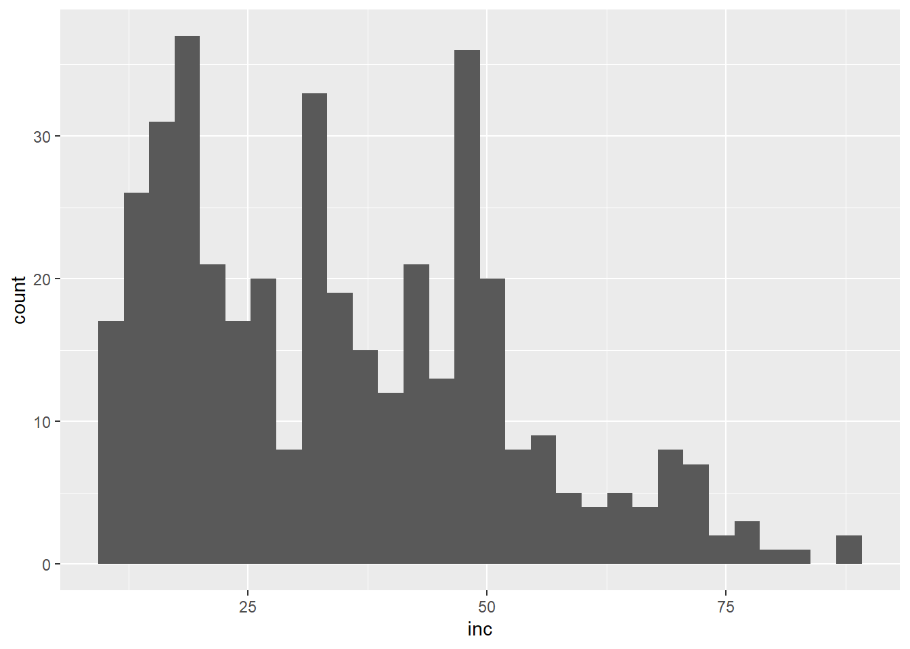
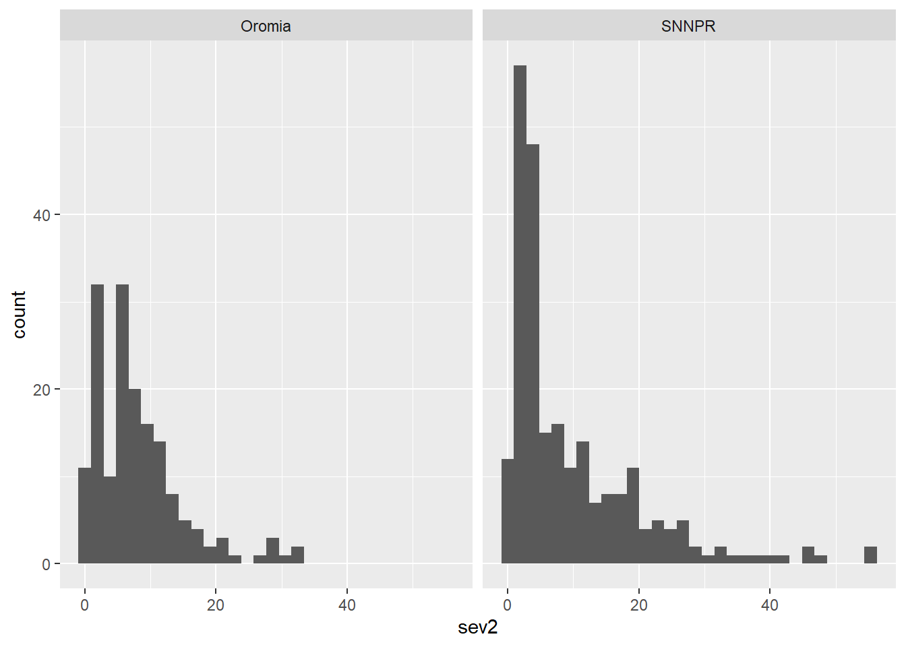
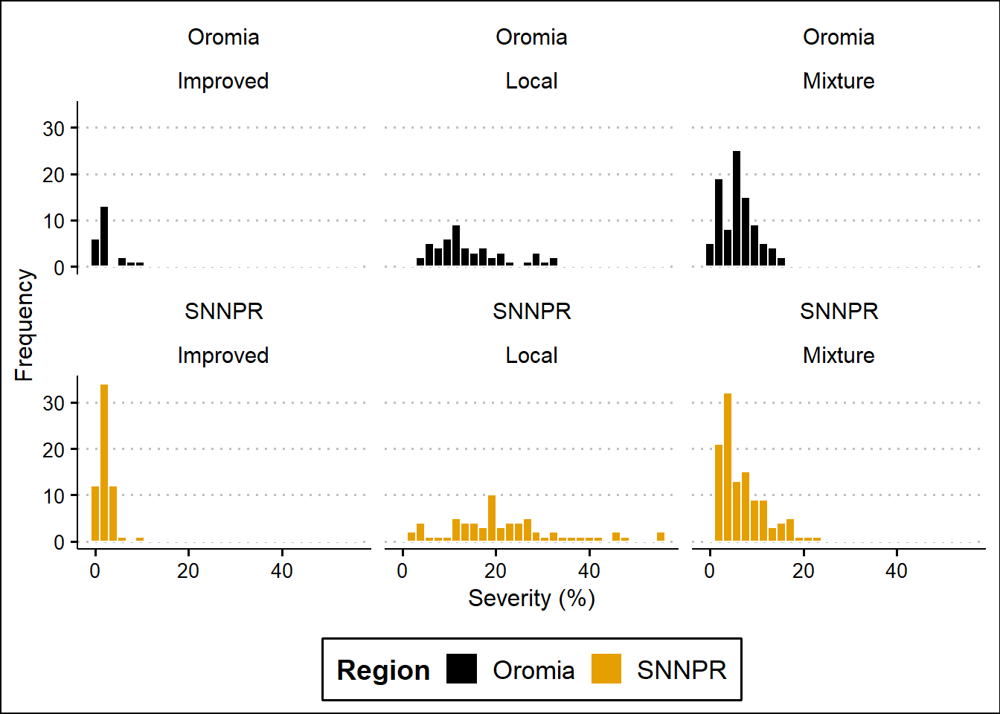
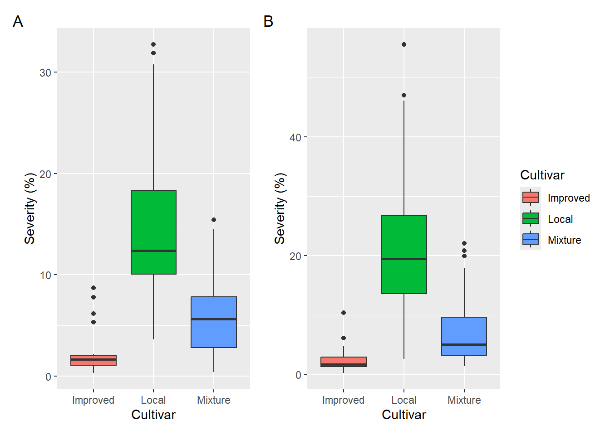
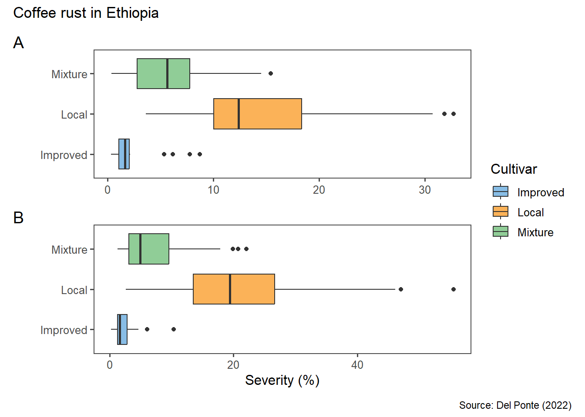
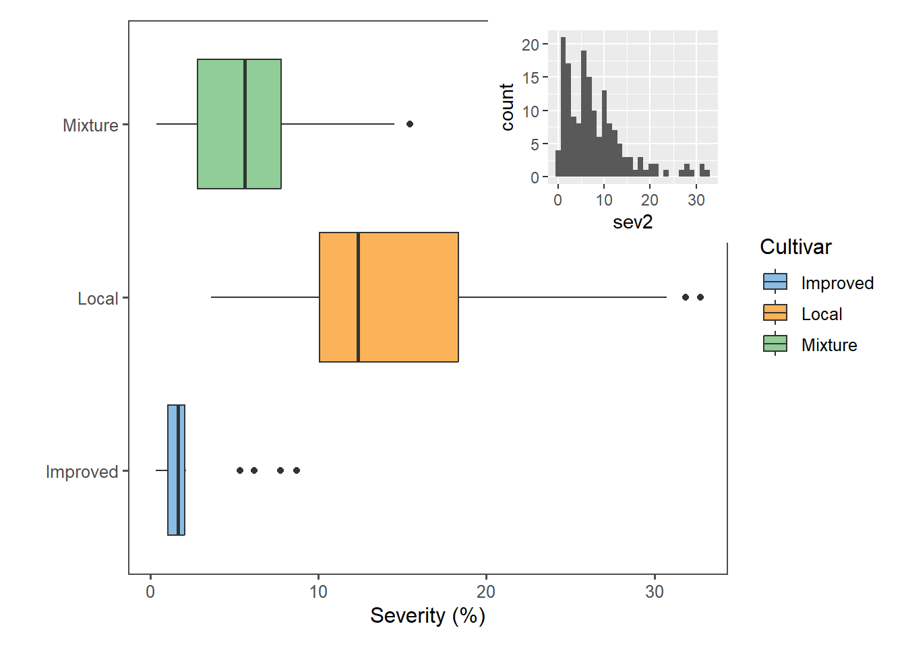

library(tidyverse)
library(ggthemes)
library(patchwork)Aula3
Bibliotecas
Pacotes que foram utilizados na aula do dia 20/03/2024
Importação dos dados
O conjunto dos dados está num arquivo .csv na web
cr <- read_csv("https://raw.githubusercontent.com/emdelponte/paper-coffee-rust-Ethiopia/master/data/survey_clean.csv")
glimpse(cr)Rows: 405
Columns: 13
$ farm <dbl> 1, 2, 3, 4, 5, 6, 7, 8, 9, 10, 11, 12, 13, 14, 15, 16,…
$ region <chr> "SNNPR", "SNNPR", "SNNPR", "SNNPR", "SNNPR", "SNNPR", …
$ zone <chr> "Bench Maji", "Bench Maji", "Bench Maji", "Bench Maji"…
$ district <chr> "Debub Bench", "Debub Bench", "Debub Bench", "Debub Be…
$ lon <dbl> 35.44250, 35.44250, 35.42861, 35.42861, 35.42861, 35.3…
$ lat <dbl> 6.904722, 6.904722, 6.904444, 6.904444, 6.904444, 6.90…
$ altitude <dbl> 1100, 1342, 1434, 1100, 1400, 1342, 1432, 1100, 1400, …
$ cultivar <chr> "Local", "Mixture", "Mixture", "Local", "Local", "Mixt…
$ shade <chr> "Sun", "Mid shade", "Mid shade", "Sun", "Sun", "Mid sh…
$ cropping_system <chr> "Plantation", "Plantation", "Plantation", "Plantation"…
$ farm_management <chr> "Unmanaged", "Minimal", "Minimal", "Unmanaged", "Unman…
$ inc <dbl> 86.70805, 51.34354, 43.20000, 76.70805, 47.15808, 51.3…
$ sev2 <dbl> 55.57986, 17.90349, 8.25120, 46.10154, 12.25167, 19.91…Visualização dos dados
Vamos utilizar a biblioteca ggplot2 para visualizar os dados do conjunto.
Como está distribuída a incidência da ferrugem do café nas 405 fazendas?
cr |>
ggplot(aes(inc))+
geom_histogram()
Vimos que não é uma distribuição normal, é multimodal (mais de um pico de maior inc)
summary(cr$inc) Min. 1st Qu. Median Mean 3rd Qu. Max.
9.50 19.43 32.50 34.89 48.20 86.71 A inc da ferrugem variou de 9,50% a 86,71%, com média de 32,50% e mediana de 32,50%.
cr |>
ggplot(aes(x = farm, y = inc))+
geom_boxplot()
Sumarização e visualização dos dados
cr |>
ggplot(aes(inc))+
geom_histogram()+
facet_wrap(~region)
cr |>
ggplot(aes(inc))+
geom_boxplot()+
facet_wrap(~region)
Pelo boxplot é possível ver que a mediana mais alta, quando os dados são divididos de acordo com a região, que a incidência é mais alta em Oromia.
Para saber a média, mediana e desvio padrão de inc das duas regiões:
cr |>
group_by(region) |>
summarise(inc_mean = mean(inc),
inc_sd = sd(inc),
inc_median = median(inc))# A tibble: 2 × 4
region inc_mean inc_sd inc_median
<chr> <dbl> <dbl> <dbl>
1 Oromia 37.0 14.6 39.5
2 SNNPR 33.4 18.9 29.6Mesma coisa para cultivar:
cr |>
group_by(cultivar) |>
summarise(inc_mean = mean(inc),
inc_sd = sd(inc),
inc_median = median(inc))# A tibble: 3 × 4
cultivar inc_mean inc_sd inc_median
<chr> <dbl> <dbl> <dbl>
1 Improved 16.4 5.66 15.2
2 Local 53.4 14.3 50.9
3 Mixture 31.9 11.2 31.6Quero saber o que é mais interessante? Usar severidade ou inc? Existe alguma relação entre elas?
cr |>
ggplot(aes(inc, sev2))+
geom_point( )
É possível ver que há um aumento da severidade conforme a incidência aumenta. A partir disso, é possível criar um modelo para predizer/estimar a severidade de acordo com a incidência, já que foi verificado essa relação entre essas duas variáveis.
cr |>
ggplot(aes(sev2))+
geom_histogram()+
facet_wrap(~region)
De acordo com a severidade, a distribuição também é assimétrica - indica que a mediana e a média são mais distantes.
cr |>
#group_by(cultivar) |>
summarise(sev_mean = mean(sev2),
sev_sd = sd(sev2),
sev_median = median(sev2))# A tibble: 1 × 3
sev_mean sev_sd sev_median
<dbl> <dbl> <dbl>
1 9.09 9.22 5.95A média está mais alta do que a mediana (a média está sendo influenciada pelos outliers - aqueles valores com a severidade mais alta).
Quando se tem uma situação mais simétrica (mais próximo da normalidade), a média e a
mediana estão mais próximas.
cr |>
group_by(cultivar) |>
summarise(sev_mean = mean(sev2),
sev_sd = sd(sev2),
sev_median = median(sev2))# A tibble: 3 × 4
cultivar sev_mean sev_sd sev_median
<chr> <dbl> <dbl> <dbl>
1 Improved 2.16 1.82 1.64
2 Local 18.7 11.1 17.2
3 Mixture 6.47 4.35 5.43Tem tendência de maior homogeniedade dentro de cada grupo (medianas e médias mais próximos para cada cultivar).
cr |>
ggplot(aes(sev2))+
geom_histogram()+
facet_wrap(~cultivar)
cr |>
ggplot(aes(sev2))+
geom_histogram()+
facet_wrap(~region)
cr |>
ggplot(aes(sev2, fill = region))+
scale_fill_colorblind()+
geom_histogram(color = "white")+
facet_wrap(region ~ cultivar, ncol = 3)+
theme_clean(base_size = 14)+
theme(legend.position = "bottom")+
labs(y = "Frequency",
x = "Severity (%)",
fill = "Region")
ggsave("plot2.png", bg = "white")É possível ver que, de maneira geral, a severidade para as cultivares se mantém similar independente da região.
Criar subconjuntos
Seleção de colunas = select() e Filtragem de linhas = filter() (ambas funções do pacote dplyr). Como o tidyverse contempla o dplyr e já foi carregado, não é necessário carregar o pacote dplyr.
# filtra Oromia
cr_oromia <- cr |>
select(farm, region, cultivar, sev2) |>
filter(region == "Oromia")
# filtra SNNPR
cr_pr <- cr |>
select(farm, region, cultivar, sev2) |>
filter(region == "SNNPR")Utiliza as funções select()e filter() do pacote dplyr para selecionar as colunas e linhas respectivamente.
Visualização dos subconjuntos
Gráficos ggplot para cada subconjunto
p1 <- cr_oromia |>
ggplot(aes(cultivar, sev2, fill = cultivar))+
geom_boxplot()+
labs(#title = "Oromia",
y = "Severity (%)",
x = "Cultivar",
fill = "Cultivar")
p2 <- cr_pr |>
ggplot(aes(cultivar, sev2, fill = cultivar))+
geom_boxplot()+
labs(#title = "SNNPR",
y = "Severity (%)",
x = "Cultivar",
fill = "Cultivar")
(p1 + p2)+ # coloca um gráfico ao lado do outro; o + pode ser substituído por |
#p1 / p2 # coloca um gráfico em baixo do outro
plot_layout(guides = 'collect')+ # para deixar apenas 1 legenda dos gráficos (já que é a mesma)
plot_annotation(tag_levels = "A")
ggsave("patch1.png")Para fazer o mesmo gráfico, mas invertendo os eixos, de maneira mais rápida, sem precisar recriar todo o ggplot, utilizar a função coord_flip()
p1 <- cr_oromia |>
ggplot(aes(cultivar, sev2, fill = cultivar))+
geom_boxplot()+
scale_fill_few()+
theme_few()+
labs(#title = "Oromia",
x = "",
y = "Severity (%)",
fill = "Cultivar")+
coord_flip()
p2 <- cr_pr |>
ggplot(aes(cultivar, sev2, fill = cultivar))+
geom_boxplot()+
scale_fill_few()+
theme_few()+
labs(#title = "SNNPR",
x = "",
y = "Severity (%)",
fill = "Cultivar")+
coord_flip()
p3 <- cr_oromia |>
ggplot(aes(x = sev2))+
geom_histogram()Utilizando o patchwork
O pacote patchwork foi utilizado para fazer essa junção de mais de um gráfico em apenas uma imagem.
#(p1 + p2)+ # coloca um gráfico ao lado do outro; o '+' pode ser substituído por '|'
(p1 / p2)+ # coloca um gráfico em baixo do outro
plot_layout(guides = 'collect',
axes = 'collect') +
plot_annotation(tag_levels = "A")+
plot_annotation(title = "Coffee rust in Ethiopia",
caption = "Source: Del Ponte (2022)")
ggsave("patch2.png", width = 6, height = 4)Para inserir um gráfico dentro de outro gráfico usar a função insect_element():
p1 + inset_element(p3, left = 0.6, bottom = 0.6, right = 1, top = 1)